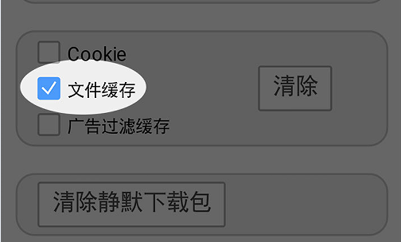

时间：2016-11-28
最近，一直在做微信企业号的开发，遇到的问题数不胜数，尤其以其中的缓存问题最棘手。
查找了一些资料，总结一下有以下几种解决办法：
a) 在页面头部加上如下的内容
<meta http-equiv="cache-control" content="max-age=0" />
<meta http-equiv="cache-control" content="no-cache" />
<meta http-equiv="expires" content="0" />
<meta http-equiv="expires" content="Tue, 01 Jan 1980 1:00:00 GMT" />
<meta http-equiv="pragma" content="no-cache" />
b) url后加随机数
URL 参数后加上 "?ran=" + Math.random();
c) 用随机时间，和随机数一样
在URL 参数后加上 "?timestamp=" + new Date().getTime();
d) 在css文件和js文件后加版本号
eg: test.1.1.css
上述方法ios基本没什么问题，但是android用的是x5内核的浏览器，对于这个顽固分子不起作用。
只能让用户退出重新登录，有时候退出重新登录也不起作用，只好使用以下方法
安卓用户在任意聊天窗口发送： http://debugx5.qq.com 打开这个网址，找到清理缓存，点击确定即可。
这种方法确实能解决问题，但是不是长久之计。使用如下方法：
在html标签中增加不存在的manifest文件链接：
<html manifest="IGNORE.manifest">
HTML5 W3C规范https://www.w3.org/TR/html5/browsers.html，解析器下载manifest header 404/410时，缓存会失效。
以上。